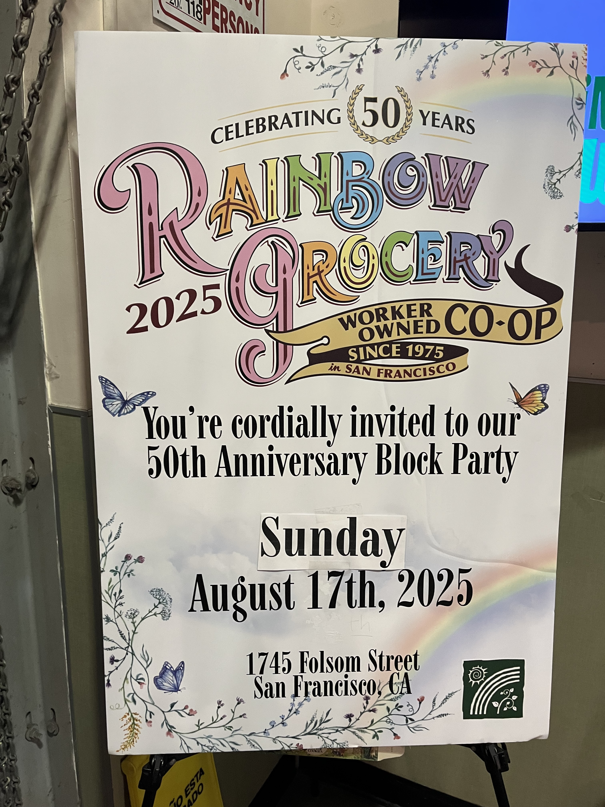
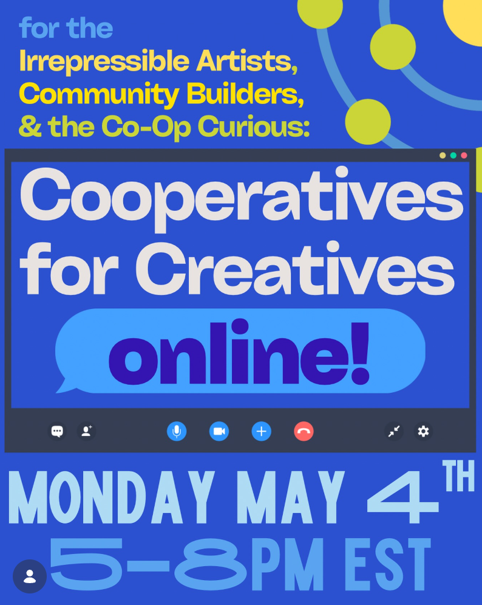
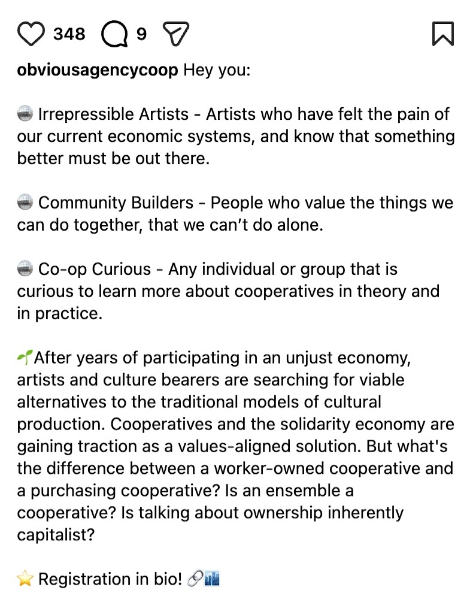
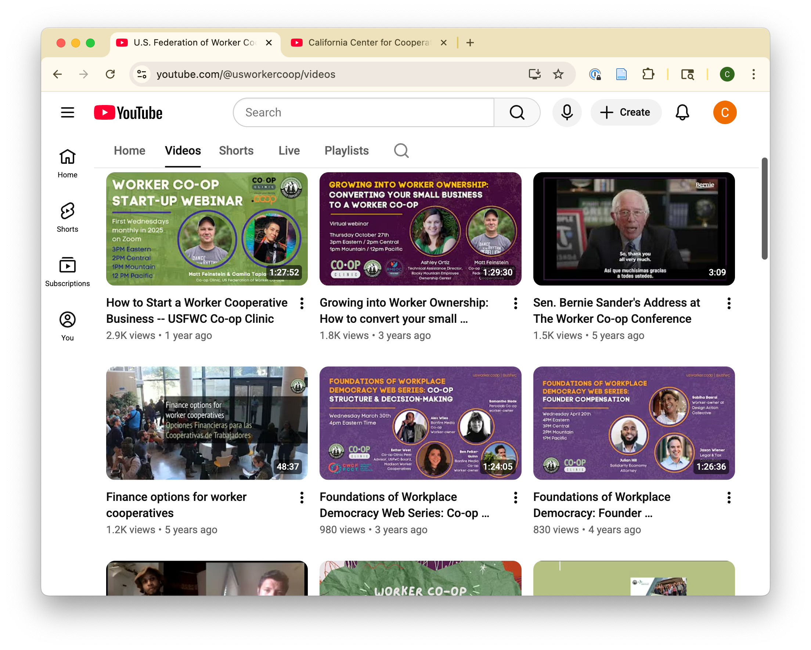
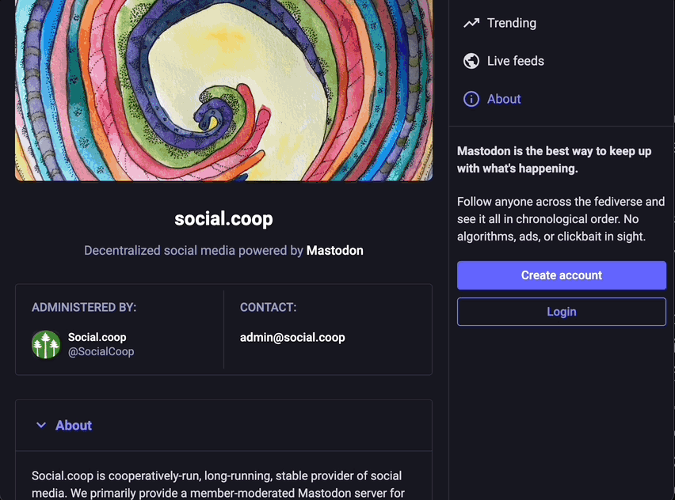

Your questions are complex, though. You always learn best from talking to people, but don't know anyone in your city who has run a coop. [[Online networking<-💬 Are there people you could speak with online?]] :: Have no idea what a coop is {"position":"700,325","size":"100,100"} You open a browser and try to think of a single website. Ah, Google! You open the site and search: "What is a worker cooperative?" [[Media resources<-▷ You get back a bunch of results.]] At the end of the first video you watch, you see that the coop has an Instagram account. [[Social media<-📱 Maybe you'll follow them.]] :: Media resources {"position":"1000,400","size":"100,100"} ## ▷ Media resources The global cooperative community are prolific information producers and sharers. Worker cooperatives are no exception. Much of what is produced is made freely available online in a wide variety of formats ### Online resource directories Many organizations in the cooperative ecosystem make information accesisble to the public on their websites. Resources range from statistical information and reports about the cooperative economy, to member maps, to guides to cooperative history. Examples: * NoBAWC's member map, a map of Bay Area worker cooperatives * USFWC's member-submitted list of cooperative-made products * University of Wisconsin's list of resources for worker cooperatives, including both relevant reports from various providers and examples of worker cooperatives in Wisconsin * New Economy Coalition's Black Co-op History resource list ### Online courses A few cooperative organizations offer self-paced online classes relating to topics specific to worker cooperatives. Many are free, and are targeted from people new to cooperatives to long-running businesses. Examples: * Start Coop's introduction to starting a lean co-op * L.A. Coop Lab offers variety of courses from a few different organizations. Topics include starting a coop, an introduction to worker cooperatives in Spanish and English, and more * National Cooperative Business Association's customizable education tools for the wider cooperative community (i.e. not just worker cooperatives) ### Blogs and user-generated resources Many worker cooperatives and regional cooperative groups have active news sections on their websites, including links to aggregated resources like member maps, lectures, events, and oral histories. Additionally, the larger cooperative community has created many ways to collate information and often offer them as standalone websites. Additionally, the US worker cooperative community has many longform videos available on YouTube, ranging from how-tos, to topics relating to social justice and the wider solidarity economy, to simply sharing cooperative stories. Examples: * Cooperation Jackson's blog, a hub of regularly updated information relating to cooperatives and racial justice in Jackson, Mississippi * tech-coops.xyz, a list of international tech cooperatives editable on GitHub * stories.coop, a project hosted by the ICA where people around the world can submit stories relating to cooperatives for sharing with the public * podcast Storied SF, in an ongoing series on San Francisco cooperatives * An individual's compiled playlist beginning with videos relating to worker cooperatives What's next? * [[Social media<-📱 Time to scroll.]] * [[Online networking<-💬 I should probably try to meet people.]] * [[Go to sleep<-😴 You start to nod off.]] :: Online networking {"position":"1000,800","size":"100,100"} ## 💬 Online networking For folks within the cooperative movement, there are many ways stay connected online. Because cooperation among cooperatives and education of members are core cooperative principles ([[ICA, 1995->References]]), the cooperative community is particularly active in creating accessible educational resources with personal connection at the core. ### Email lists The local cooperative network has active email lists for announcements, where you can learn about upcoming events thrown by local cooperatives, and a more active discussion list only for network members. ### Peer networks and mentorship circles The U.S Federation of Worker Cooperatives coordinates peer networks, all of which are accessible online. Peer networks connect members of cooperatives around different themes, including member identity, business sector, and role. Some mentorship circles meet remotely over video chat and/or communicate over chat software regularly, while others exist only as active email lists. What's next? * [[Social media<-📱Time to scroll.]] * [[Media resources<-▷ I wonder if there's an explainer I could watch.]] * [[Go to sleep<-😴 Eventually the party has to end.]] :: References {"position":"1300,500","size":"100,100"} ## References {Fisher, K., & Fulton, C. (2022). Information Communities ``[eBook]``. In S. Hirsh (Ed.), Information Services Today: An Introduction (3rd ed., pp. 90–107). Bloomsbury Publishing USA. http://ebookcentral.proquest.com/lib/sjsu/detail.action?docID=6891082
International Cooperative Alliance. (1995). Cooperative identity, values & principles. International Cooperative Alliance. https://ica.coop/en/cooperatives/cooperative-identity
About. (n.d.). Social.Coop. Retrieved May 3, 2026, from https://social.coop/about
Celebrating cooperatives through storytelling. (n.d.). Stories.coop. Retrieved May 3, 2026, from https://stories.coop/
General: Worker Cooperatives. (n.d.). ``[Video Playlist]``. YouTube. Retrieved May 3, 2026, from https://www.youtube.com/playlist?list=PL6050697FE4E55163
Hunt, J. (n.d.). ``[Podcast]`` San Francisco Co-Ops—Episodes. Storied: San Francisco. Retrieved May 3, 2026, from https://www.storiedsf.com/episodes/tag/San+Francisco+Co-Ops
L.A. Co-op Lab Academy. (n.d.). L.A. Co-Op Lab. Retrieved May 3, 2026, from https://academy.lacooplab.com/home
Lean Co-Op. (n.d.). Start.coop. Retrieved May 3, 2026, from https://startcoop.teachable.com/p/lean-co-op
Learning Hub. (n.d.). NCBA CLUSA. Retrieved May 3, 2026, from https://ncbaclusa.coop/learning-hub/
Worker-Owned Businesses. (n.d.). Network of Bay Area Worker Cooperatives. Retrieved May 3, 2026, from https://nobawc.org/map-of-nobawc-coops/
Newsletter & Listservs. (n.d.). Network of Bay Area Worker Cooperatives. Retrieved May 3, 2026, from https://nobawc.org/newsletter-listservs/
News and Media. (n.d.). Cooperation Jackson. Retrieved May 3, 2026, from https://cooperationjackson.org/blog
Obvious Agency. ``[@obviousagencycoop]``. (2026, April 29). Hey you: 🪩 Irrepressible Artists—Artists who have felt the pain of our current economic systems, and know that something better ``[Photograph]``. Instagram. https://www.instagram.com/obviousagencycoop/p/DXusdl1AYk3/
Peer Networks. (n.d.). U.S. Federation of Worker Cooperatives. Retrieved May 3, 2026, from https://www.usworker.coop/programs/peer-networks/
Resource List: Black Co-op History. (2023, February 1). New Economy Coalition. https://neweconomy.net/black-coop-history/
Tech Coops list. (n.d.). Retrieved May 3, 2026, from https://tech-coops.xyz/
#ShopCoop. (n.d.). U.S. Federation of Worker Cooperatives. Retrieved May 3, 2026, from https://www.usworker.coop/shopcoop/
U.S. Federation of Worker Cooperatives. (n.d.). ``[Profile]``. YouTube. Retrieved May 3, 2026, from https://www.youtube.com/channel/UCZDuGKePDRDvj0IdWWyRieQ
Worker Cooperatives. (n.d.). UW Center for Cooperatives. Retrieved May 3, 2026, from https://uwcc.wisc.edu/resources/worker-cooperatives/
} [[Dream sequence introduction<-Start over]] :: Social media {"position":"1000,600","size":"100,100"} ## 📱Social media You're interested in connecting with other people around the cooperative movement and learning more about the worker cooperative community. Luckily, there's a lot of ways to connect with people, organizations, and information via social media. ### Corporate networks Some cooperative businesses and organizations are active on social media sites like Instagram, Facebook, and TikTok, sharing about upcoming events and how to get involved in the community. Reddit tends to be a bit more active, with many folks in the cooperative movement sharing information and experiences on subreddits like /r/cooperatives. ### Non-corporate networks You've been itching to get off corporate social media and have heard a bit about Mastodon, a decentralized social media network. It's like X, but it's based on open source software and an open protocol, so anyone can host an instance. To you, this anti-corporate stance feels more in line with cooperative values—and, it turns out there's an instance just for coops, social.coop. It's democratically run and free to join. You scroll through the publicly available feeds and decide to sign up for an account. {